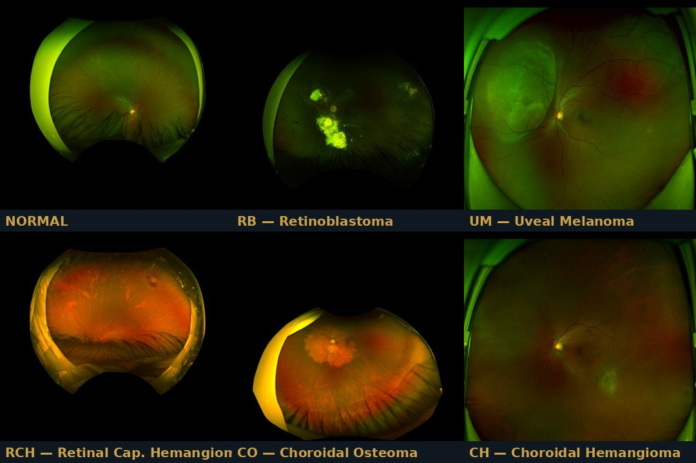
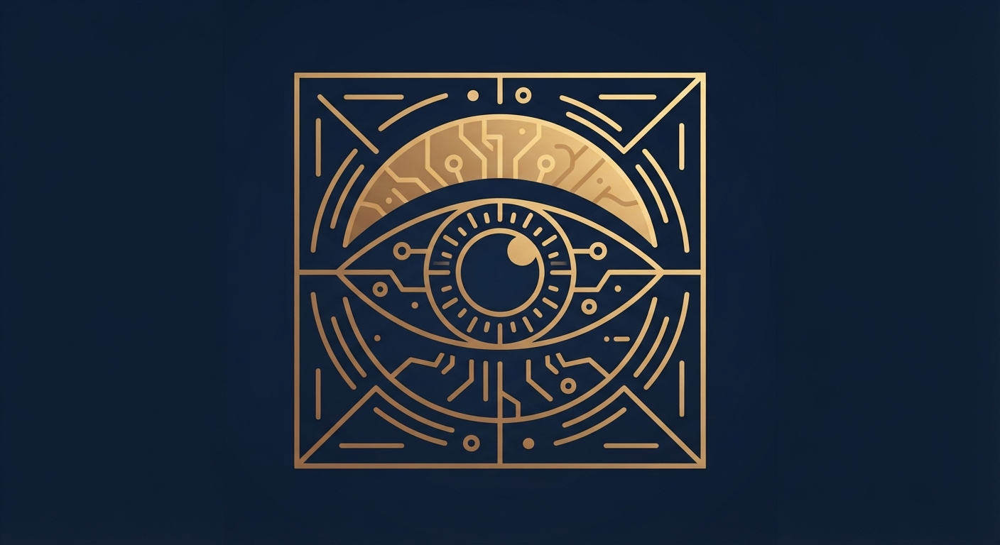

OcuGuard classifies colour fundus photographs across 6 intraocular disease classes using a 13-engine ensemble and routes every case to one of four triage zones by clinical severity — from non-diseased to immediate specialist referral. An independent out-of-distribution safety gate catches anything that is not a genuine fundus photograph before it can be classified at all. An eye-care professional always stays in command. Seven annotated demo cases span the full spectrum from a healthy fundus to the out-of-distribution safety gate itself.
OcuGuard combines severity-based zone triage with an independent out-of-distribution safety gate and a six-class fundus classification engine. Each capability is designed to work together — classify the fundus image, catch anything that should never have been classified at all, and know exactly when to defer.
Seven fundus cases, each showing the full ensemble output: primary classification, severity zone, subtype estimate where applicable, and (for the out-of-distribution case) the safety gate firing as designed. Select a case and explore why the system refuses to guess when an image was never a fundus photograph to begin with.

All seven demo cases use de-identified research fundus images from the system’s own validation set. Never a clinical diagnosis. A qualified eye-care professional must interpret all findings.
Zone assignment is computed from the clinical severity of the predicted class itself, not the ensemble’s confidence in it — a deliberate design choice so a clinician reads urgency straight off the colour. The out-of-distribution gate operates independently, ahead of classification.
AEGIS OcuGuard classifies across six categories drawn from an ultra-widefield fundus imaging research dataset for intraocular tumor diagnosis. Once a case is classified Tumor or Cancer, a secondary subtype estimate names the specific disease.
OcuGuard is grounded in fundus imaging science, transfer learning theory, and clinical AI safety design. The feature extraction pipeline, 13-engine ensemble, and severity-based zone routing all derive from first principles — not arbitrary choices.
Colour fundus photography captures the retina, optic disc, and posterior pole of the eye, revealing structural and vascular abnormalities associated with intraocular tumours — irregular pigmentation, mass elevation, calcification patterns, and vascular anomalies. AEGIS OcuGuard learns to read these features from an ultra-widefield fundus imaging research dataset for intraocular tumor diagnosis, spanning Normal fundi and five distinct tumour subtypes across the retina and choroid.
OcuGuard uses ResNet-50 pre-trained on ImageNet as the feature extractor — a deep convolutional architecture that captures rich visual representations from fundus images without requiring millions of labelled training examples. The extracted feature representation is reduced to a compact k=256 principal-component feature vector. Thirteen independently trained engines vote on the classification, and the same feature vector feeds two secondary subtype classifiers (Cancer: RB vs UM; Tumor: RCH vs CO vs CH) once the primary decision is Tumor or Cancer. Exact engine identities, thresholds, and internal weighting remain protected under the AEGIS IP Shield policy; the architecture itself is disclosed openly.
The system was trained and evaluated on a distilled research dataset under strict group-aware out-of-fold validation, so no image from the same source patient appears in both training and evaluation. Results reported exactly as measured — no inflation, no cherry-picking.
| Class | Zone | Recall (out-of-fold) |
|---|---|---|
| Normal | GREEN | 94.3% |
| RB — Retinoblastoma | ORANGE (Cancer) | 95.7% |
| UM — Uveal Melanoma | ORANGE (Cancer) | 52.9% |
| RCH — Retinal Capillary Hemangioma | YELLOW (Tumor) | 74.2% |
| CO — Choroidal Osteoma | YELLOW (Tumor) | 61.3% |
| CH — Choroidal Hemangioma | YELLOW (Tumor) | 54.9% |
Honest note: Uveal Melanoma and the Tumor-group subtypes (RCH, CO, CH) are meaningfully harder than Normal and Retinoblastoma — CH and CO are the main source of mutual confusion. These figures are stated plainly rather than smoothed over. This is exactly why every Tumor and Cancer case is routed to a mandatory-referral zone regardless of the subtype estimate’s own confidence: the zone protects the patient even where the subtype call is uncertain.
| Subtype task | Classes | n | Balanced accuracy (out-of-fold) | Chance level |
|---|---|---|---|---|
| Cancer subtype | RB vs UM | 340 | 93.1% | 50.0% |
| Tumor subtype | RCH vs CO vs CH | 337 | 72.7% | 33.3% |
Both subtype tasks are conditioned on the parent class already being correctly identified as Cancer or Tumor. Both are well above chance and are shown to the user as a research-grade estimate — not a substitute for histopathological diagnosis.
OcuGuard is trained and validated on a distilled research dataset derived from a publicly documented ultra-widefield fundus imaging dataset for intraocular tumor diagnosis. Raw patient fundus images are not distributed in the public demo. The seven demo cases embedded in the public console are de-identified research fundus images from the system’s own validation set, released for educational and research use.

These apps demonstrate clinical AI systems capable of classification, early pre-emptive detection, and progressive augmented management. Because the full AEGIS engine and dataset run to several gigabytes, only educational demo modes are hosted here — live classification on new patient fundus images requires the AEGIS Desktop Application. Institutions wishing to contribute local data for engine refinement are welcome to reach out; we share progressive validation results with every contributing partner and operate in strict accordance with PDPA.
What institutional partners receive: technical report with full validation methodology · AEGIS Desktop Application licence · progressive model result updates as the engine board improves · co-attribution in peer-reviewed publications where applicable.
All enquiries to aegisloh@aegishumanai.com. International partnerships welcome. DUA provided before any data exchange.